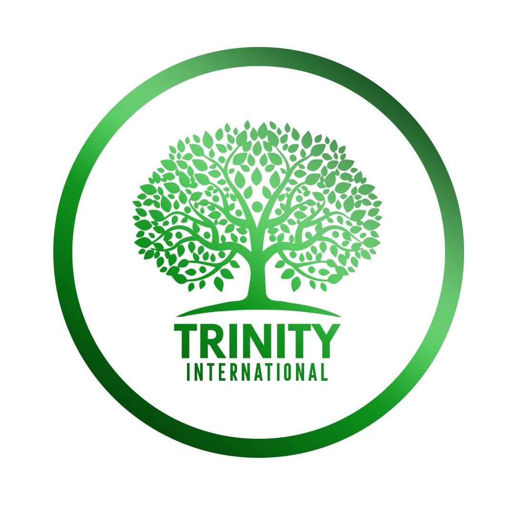
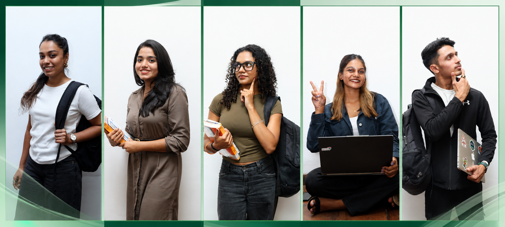
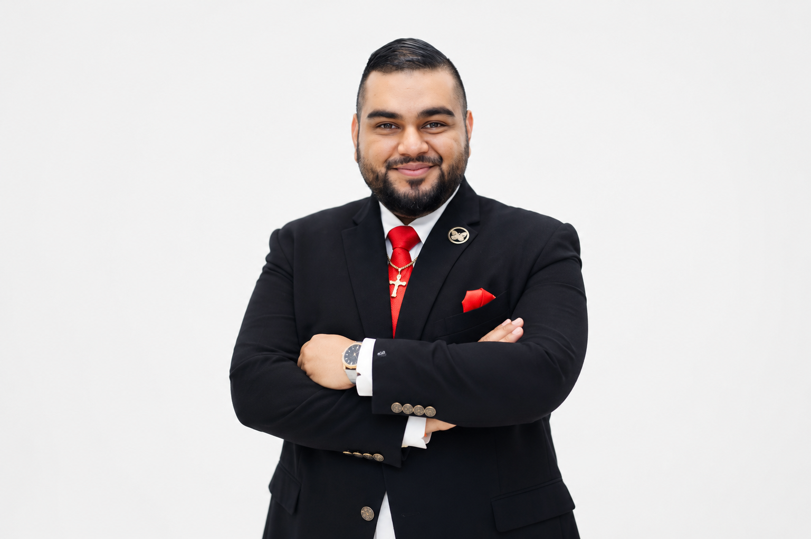
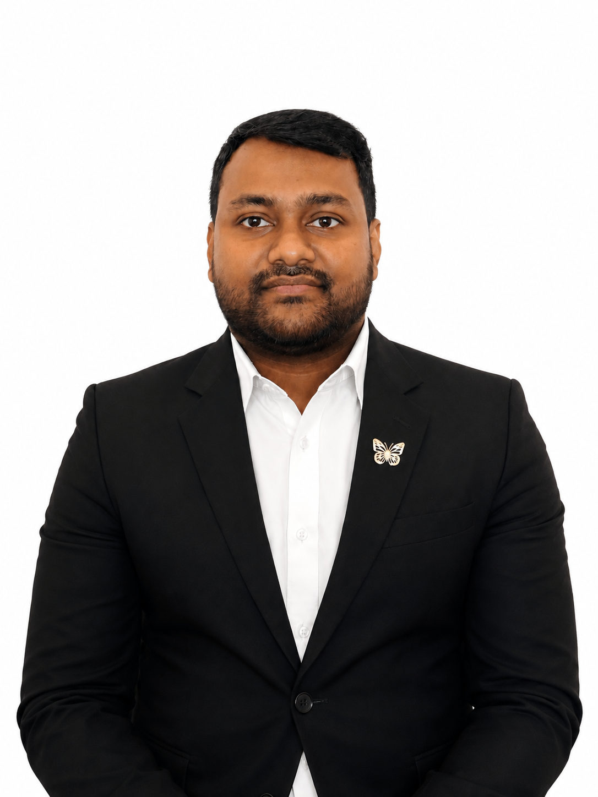
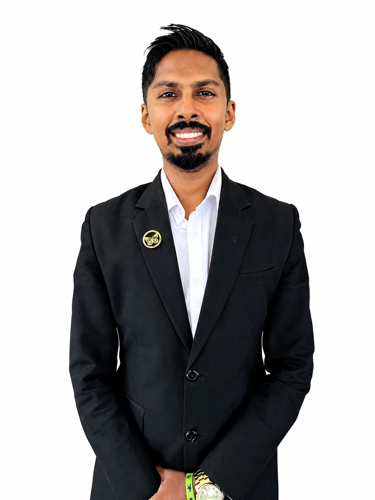

Digital Growth Proposal
A trusted, mobile-first platform designed to turn student ambition into qualified counselling conversations.
The opportunity
Trinity International supports students and professionals through global education, migration, visa and career decisions.
The proposed experience brings that guidance into one clear digital journey: build trust, explain options, capture qualified profiles and connect each visitor with the right counsellor.

Built on proven credibility
Clear proof points, leadership visibility, student success stories and destination-specific content help families assess credibility quickly.
Service architecture
FindmyUni course and institution discovery.
Clear pathways and informed planning.
Practical support through each step.
Destination, course and funding guidance.
Destination discovery
Structured country pages turn broad interest into informed shortlists with university context, costs, intakes and practical guidance.
FindmyUni
FindmyUni helps students identify suitable Sri Lankan institutions and programmes based on academic and career goals.
A distinct blue visual system separates the local-study offer while keeping it connected to Trinity International's trusted advisory model.
Qualified lead generation
Academic, English, work, visa and funding details.
Internal 100-point preliminary screening model.
Strengths, concerns and clear next-step guidance.
Secure submission enables targeted follow-up.
Results are clearly positioned as preliminary agency guidance - not an admission or immigration decision.
People behind the promise

CEO
Director, HR & Legal
Head of Projects

Assistant Manager

Assistant Manager, HR
Responsive portrait framing keeps each team member clear and professional across desktop and mobile.
Experience principles
Touch-friendly forms, readable content and responsive imagery.
Fast routes to services, destinations and counselling.
Private document storage and structured Supabase submissions.
Contact, WhatsApp and consultation calls-to-action throughout.
Recommended next step
Complete Supabase policies, test every form, review content and connect analytics.
Track qualified leads, popular destinations, conversion points and mobile engagement.